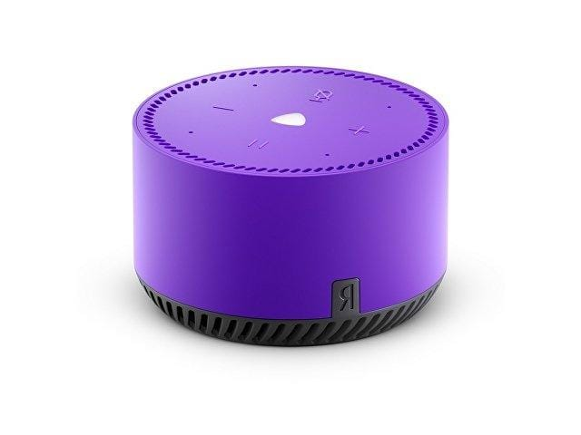
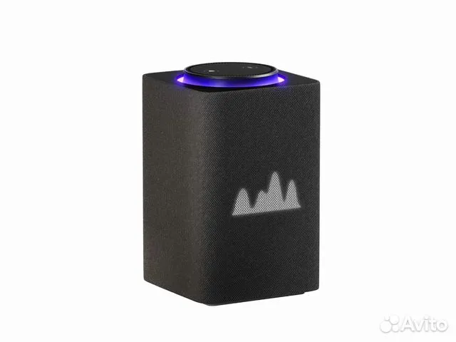
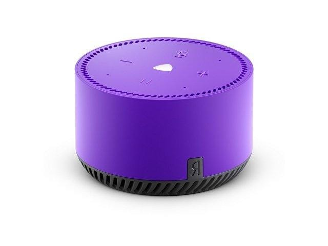
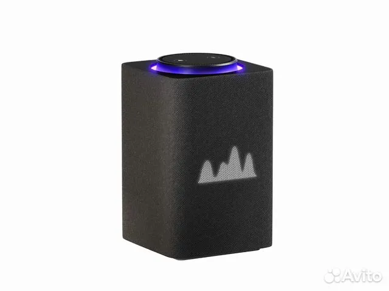

Умные гаджеты в доме сокращают объем работ по хозяйству, освобождая время и облегчая бытовую жизнь. Рассказываем про лучшие девайсы, которые сделают жизнь в квартире или доме более комфортной и автоматизированной
«Домашние» гаджеты можно условно разделить на три категории:
Колонки отличаются функциональностью, громкостью, дизайном и ценой, зависящей от их возможностей. Они могут иметь сенсорный экран, выводить время, погоду и другие сведения. Качество звука, особенно для музыкальных произведений, важно, так как колонки с большей громкостью и чистым звучанием предпочтительнее. Микрофон должен быть чувствительным для голосовых команд. Поддержка двухдиапазонного Wi-Fi улучшает взаимодействие с гаджетами, а колонки воспроизводят музыку, ищут контент в интернете, выводят фильмы и управляют подключенными устройствами. Они могут быть разных цветов и материалов, выбор зависит от потребностей и интерьера.
 



Устройство предназначено для использования в домах без заранее установленных «умных» коммуникаций. Оно совместимо с приборами, управляемыми дистанционно, и следит за их работой по расписанию или через мобильное приложение. Розетки могут учитывать потребляемую электроэнергию, включать и отключать устройства, а также прекращать работу при перегреве. Есть режим «Отпуск» для имитации активности в доме.
Внешне устройство выглядит как съемный «тройник» с одним гнездом и индикатором работы. С одной стороны подключается к электросети, с другой – к управляемому прибору. Это накладной модуль обеспечивает безопасность дома в ваше отсутствие.
«Умные» лампы – это светодиодное освещение с Wi-Fi, голосовым управлением и дистанционным доступом через приложение. Они подходят для разных светильников благодаря разнообразию форм и мощности. Преимущества включают дистанционный контроль освещенности, включение и выключение по расписанию.
Лампы меняют яркость и цветность по таймеру или по требованию. В приложении отображаются все управляемые источники света с возможностью назначения индивидуальных рабочих планов.
С несколькими лампами можно создать цветомузыку, меняющую цвет в зависимости от звука. Однако некоторые лампы имеют однонаправленный световой пучок, оставляя соседние зоны темными. Они совместимы с популярными платформами, такими как Алиса, Amazon Alexa, Google Home.
Это лишь малая часть устройств, которые могут быть использованы в умном доме. Более подробную информацию вы можете найти здесь.